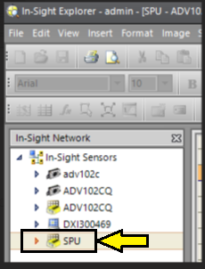
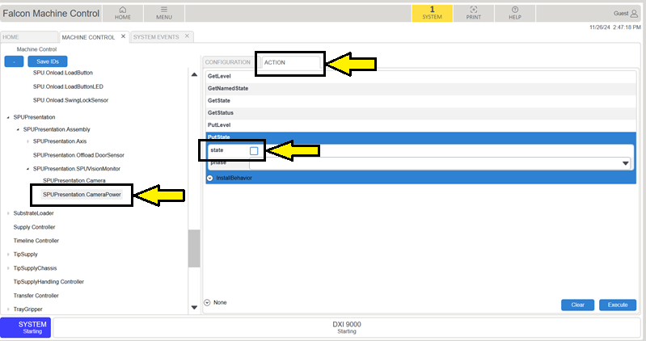

Turning On the Sample Presentation Unit (SPU) Camera
This topic includes information about how to turn on the sample presentation unit (SPU) camera.
- Press the Windows key and go to Cognex > In-Sight Explorer to open the In-Sight Explorer application.
- In the In-Sight Explorer application go to View > In-sight Network to open the In-Sight Network pane.
-
In the In-Sight Network pane go to
In-Sight Sensors > SPU.
Figure 407: Sample Presentation Unit (SPU) Camera in In-Sight Explorer 
Note: If SPU is not listed in the In-Sight Sensors menu, complete the following steps.- Press the Windows key and go to Machine Control App to open the Machine Control application.
- In Machine Control go to SPU Presentation > SPUPresentation.Assembly > SPUPresentation.SPUVisionMonitor > SPUPresentation.CameraPower.
- In the Action tab select
PutState and select the
state checkbox.
Figure 408: SPUPresentation.CameraPower Actions in Machine Control 
- Select
Execute. If
SPU is now listed in the In-Sight Sensors menu, proceed to the next step. Otherwise, complete the following steps.
- In the Action tab select PutState and clear the state checkbox.
- Select Execute.
- In the Action tab select PutState and select the state checkbox.
- Select Execute.
- In the In-Sight Sensors menu, right-click SPU and select Show Spreadsheet View.
- Go to Sensor > Startup to open the SPU - Startup dialog.
- In the SPU - Startup dialog select Online.
- Select OK.
- Select the green Power icon.